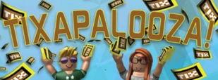

Conheça a antiga moeda do Roblox e entenda por que os Tickets se tornaram uma parte marcante da história da plataforma.
✦ ݁˖ O que eram os Tickets?
Os Tickets, popularmente conhecidos como Tix, eram uma antiga moeda virtual utilizada dentro do Roblox.
Durante vários anos, os Tix fizeram parte da economia da plataforma ao lado dos Robux.
Os jogadores podiam utilizar essa moeda em diferentes partes da plataforma e, durante determinados períodos, também existiam formas de trocar Tickets por Robux.

✦ ݁˖ A importância dos Tix
Os Tickets ficaram conhecidos principalmente entre os jogadores das versões mais antigas do Roblox.
Para muitos usuários, eles representavam uma maneira alternativa de participar da economia da plataforma sem depender apenas dos Robux.
Com o crescimento do Roblox, entretanto, o sistema econômico da plataforma também passou por diversas mudanças.
✦ ݁˖ O fim dos Tickets
Em 2016, o Roblox anunciou que o sistema de Tickets seria encerrado.
A remoção dos Tix representou uma grande mudança para os jogadores que estavam acostumados com a antiga moeda.
Depois do encerramento do sistema, os Robux permaneceram como a principal moeda virtual utilizada na plataforma.
✦ ݁˖ A despedida dos Tix
Antes da retirada definitiva dos Tickets, o Roblox realizou um evento conhecido como Tixapalooza.
Esse período marcou a despedida da moeda e contou com itens relacionados aos Tix disponíveis na plataforma.

✦ ݁˖ Curiosidade
Mesmo anos depois de sua remoção, os Tix continuam sendo lembrados pela comunidade e aparecem frequentemente em discussões sobre o Roblox antigo.
Por terem feito parte da plataforma durante muitos anos, eles acabaram se tornando um símbolo de nostalgia para jogadores daquela época.
Continue explorando:
← Artigo anterior:
Lançamento Oficial do Roblox
Próximo artigo:
Incidente de 1º de abril de 2012